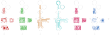

Electrical Design#
Electrical Overview#
It is helpful to understand the working principle of the UCLA Miniscope v4’s PCB if you desire to design your own. Explore the following drop-down menu to learn about the UCLA Miniscope v4’s PCB modules.
UCLA Miniscopes v4 Electrical Modules
The PCB is organized into the following modules: serializer-power module, Python480 (camera sensor) module, microcontroller module, LED-EWL module, and IMU module
These modules are each a self-contained flap in the flex-rigid UCLA Miniscope v4 PCB and connect through copper traces embedded in the flex-PCB material
The serializer with its peripheral circuitry (some passives and an oscillator) serialize parallel data from the camera sensor so that it can be sent to the data acquisition hardware via coax. The serializer also converts commands from the data acquisition hardware (which forwards commands from the PC) to i2c for processing by other hardware on the PCB.
The bottom circuit filters the main supply rail.
The U.FL connector enables a coaxial connection that carries data between the data acquisition hardware and the UCLA Miniscope v4 PCB.
The Python480 with its peripheral circuitry (some passives and a voltage reference) collects light from the sample.
The status LED and is toggled by the microcontroller via the Q1 transistor.
The microcontroller with its peripheral circuitry (some passives) process commands from Bonsai or Miniscope-DAQ-QT-GUI which are forwarded to the serializer through the data acquisition hardware. Such commands are forwarded on the i2c bus and includes:
setting the Python480’s registers to control exposure, frame rate, gain, and LED timing by operating as an SPI master.
setting the operation of the LED driver.
The pogo pads are for programming the microcontroller and reading SPI data.
The LED driver with its peripheral circuitry (some passives and a digital potentiometer that is set by i2c commands from the serializer) controls the excitation light intensity.
The electrotunable/electrowetting lens (ETL/EWL) driver with its peripheral circuitry (i.e. passives and an i2c buffer IC to convert the 1.8V i2c bus to a 3.3V i2c bus for compatibility with the EWL driver) drives the lens that operates as the UCLA Miniscope v4’s dynamic focusing mechanism. It is configured by i2c directly by the serializer.
The BNO055 with its peripheral circuitry sense orientation and send quarternion data to the serializer over i2c
Design & Production Files#
All the design and production files for the UCLA Miniscope v4 PCB are available for download in the UCLA Miniscope v4’s official GitHub repository: Aharoni-Lab/Miniscope-v4. For quick-and-easy access, direct links to electrical design and production files are below.
Design Files#
The .sch and .kicad_pcb files above can be opened in KiCAD, a user-friendly, free, and open-source eCAD software (KiCAD download). A .pdf file is also available for inspecting the schematic without KiCAD.
Production Files#
The Bill of Material (BoM) file is a csv file. Any text editor can be used to open a csvs file, but a spreadsheet software is recommended. The Gerber files are inspectable using most eCAD softwares or online Gerber viewers. PCB fabricators typically require Gerber files to produce a custom PCB. The PnP files are also csv files. PCB assemblers typically require PnP files to place and solder all the components onto your PCB. It is also possible to assemble your own UCLA Miniscope v4 PCB, but that is outside of the scope of this guide.